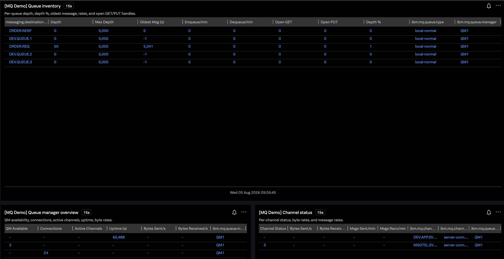

One OpenTelemetry Collector ingests IBM MQ, Kafka, and RabbitMQ metrics into Splunk Observability Cloud — alongside APM traces from instrumented MQ sample apps. Built for customers who run multiple messaging platforms today (often with platform-specific extensions) and want a single observability backend.
How to use this site
This is a presenter demo guide, not a hands-on workshop. Your audience already knows setup; use Demo script live and keep Facilitator setup for your prep. Pair with the customer’s Dynatrace MQ extension walkthrough (Thasthakir) using the mapping table.
Customer requirements map
How this demo addresses the discovery questionnaire.
Requirement
Customer context
This demo
IBM MQ Primary
Thousands of queues/QMs; MQ extension + IR360; State Street managed
ibm.mq.* metrics via Java Contrib sidecar; APM service map with PUT/GET spans; backlog incident drill
Kafka Moderate
100+ instances; Dynatrace extension
kafkametrics receiver — brokers, topics, consumer groups
Talking points when the customer compares Dynatrace extensions, AWS Distro OTel, and Grafana today.
Value add — One collector, one backend
Replace three extension patterns (MQ, Kafka, RabbitMQ) with one OTel Collector and one Splunk Observability Cloud tenant. Same deployment model they already use with AWS Distro of OpenTelemetry — add Splunk exporters alongside existing pipelines.
Value add — OpenTelemetry-native, vendor-neutral instrumentation
MQ metrics via OpenTelemetry Java Contrib; Kafka/Rabbit via standard collector receivers. No proprietary agent per platform — aligns with enterprise OTel strategy.
Value add — Metrics + APM correlation in one UI
When ibm.mq.queue.depth spikes, jump to APM traces for order-producer / order-consumer and see mq.put.order / mq.get.order spans — tie infrastructure signals to application behavior without switching tools. See the correlation drill for the click-path.
Value add — Scale-ready metric model
Same dimensions they need at production scale: queue, queue_manager, deployment.environment. Detectors on sustained depth, scrape failures, and consumer lag apply across thousands of queues with grouping — not one-off dashboards per extension.
Value add — Complements IR360, does not replace it
IR360 remains the capacity/planning tool for MQ estate. Splunk O11y is the real-time operations layer: alerting, incident drill-down, and cross-platform correlation with Kafka/RabbitMQ on AWS/Azure.
Troubleshooting value — Faster MTTR across platforms
Ops teams today chase the same symptoms in three places (MQ extension, Kafka extension, Rabbit extension). Splunk gives one symptom → metric → service → root cause path for backlog, lag, and scrape failures — with detectors that group by queue, queue_manager, or consumer group instead of rebuilding dashboards per platform.
In Splunk Observability Cloud Metric Explorer, the global filter often needs deployment.environment.name, not deployment.environment:
deployment.environment.name:messaging-demo-lab
Both attributes are set on exported data from this demo, but the UI filter picker may only match on .name. If you see no charts, try that filter first before troubleshooting ingest.
Signal
Source
Key metrics / views
MQ infrastructure
ibm-mq-java-metrics → OTLP
ibm.mq.queue.depth, channel/queue manager series
MQ application
order-producer / consumer → OTLP traces
APM service map, mq.put.order, mq.get.order
Kafka
kafkametrics receiver
Broker, topic, partition, consumer group metrics
RabbitMQ
rabbitmq receiver
Queue depth, publish/deliver rates, node health
OTelBin collector examples
Open each configuration in OTelBin to visualize receiver → processor → exporter swimlanes and validate YAML before deploying. Source YAML lives in collector/otelbin-examples/; regenerate links with bash scripts/generate-otelbin-links.sh (updates this page and demo-site/otelbin-links.json).
Presenter tip
Walk customers through the Splunk agent baseline first (traces via otlp_http, metrics via signalfx), then add one messaging receiver at a time. IBM MQ uses a Java Contrib sidecar that exports OTLP — the collector only needs an otlp receiver on the metrics pipeline.
When you open an example in OTelBin, highlight only the blocks that apply to that platform. Green = always required; optional pieces are called out separately.
Splunk OTel Collector agent — what you need
Distribution
Splunk Distribution of the OpenTelemetry Collector (not vanilla contrib for production Splunk O11y)
Extension
health_check on :13133
Receivers
otlp (gRPC :4317 + HTTP :4318) for app/sidecar telemetry · host_metrics for node CPU/memory/disk/network
Messaging receivers (rabbitmq, kafkametrics) — add those in the platform-specific OTelBin configs below
RabbitMQ receiver — what you need
Outside collector
RabbitMQ with management plugin enabled (HTTP API, default :15672) · user with at least monitoring tag · queues must exist before queue-level metrics appear
Receiver
rabbitmq — set endpoint, username, password, collection_interval
rabbitmq.message.current (dim message.state=ready), rabbitmq.consumer.count, node metrics if enabled
This demo
Management UI localhost:15672 · queue demo.orders · run load-rabbit-traffic.sh
Kafka metrics receiver — what you need
Outside collector
Kafka broker reachable on bootstrap address (e.g. host:9092) · protocol_version must match the cluster · for MSK/Confluent add auth (TLS / SASL) in production
Show this — how the four OTelBin examples fit together
Start with Splunk agent baseline — establishes signalfx + otlp_http export pattern every customer already uses for host/APM.
Add Rabbit or Kafka receiver — one new block under receivers:, wire into existing metrics pipeline, same signalfx exporter.
MQ is different — deploy sidecar + collector otlp receiver; in OTelBin you will see metrics enter via OTLP, not an ibm.mq receiver block.
Unified lab — collector/otelcol-config.yaml merges all three: otlp + kafkametrics + rabbitmq on one metrics pipeline.
At scale — hundreds or thousands of queues
Not one collector or YAML file per queue. Queues are dimensions on shared metrics (e.g. ibm.mq.queue.depth with queue=…, queue_manager=…). You deploy collectors and sidecars per host, cluster, or queue manager, then use filters and Splunk grouping — same pattern as Dynatrace MQ extension at State Street scale.
Platform
What you deploy
How queues are covered
Cardinality control
IBM MQ
One ibm-mq-metrics sidecar per queue manager (or pod per QM in K8s) · one collector can receive OTLP from many sidecars
Sidecar queueFilters in config.yml — include/exclude patterns (e.g. ORDER.*, exclude SYSTEM*), not a line per queue · multiple QMs in one sidecar config file
Tier 1: all business queues via wildcards · Tier 2: exclude temp/system · Tier 3: split sidecars by QM or region if PCF load is high · increase numberOfThreads for large estates
RabbitMQ
One rabbitmq receiver per management endpoint (node or load-balanced API)
Receiver discovers all queues automatically via management API — zero queue names in YAML
Alert on critical vhost/queue name patterns in Splunk detectors · optional: separate receivers per vhost/cluster for isolation
Kafka
One kafkametrics receiver per cluster (bootstrap brokers)
Scrapers for brokers, topics, consumer groups — topics are dimensions, not config entries
topic_match and group_match regex to skip internal topics (^[^_].*$ default) · one config template per cluster, not per topic
Deployment tiers (typical enterprise)
Collector gateway — regional or platform OTel Collectors (EKS/ECS/VM) with one metrics pipeline → signalfx. Many MQ sidecars and app agents send OTLP inward.
Edge / per-QM sidecar — Java Contrib beside each queue manager; same YAML template, swap QM host/name via env or Helm values.
Splunk layer — one detector on ibm.mq.queue.depth grouped by queue_manager + queue; top-N charts; filter queue:ORDER.* — not 1,000 dashboards.
GitOps — one Helm chart / Ansible role: collector config is static; queueFilters and env vars vary per QM from inventory (CMDB, IR360 export, tags).
Say this — vs “one config per queue”
“Dynatrace MQ extension does not need a JSON file per queue either — it discovers queues and alerts on dimensions. OTel is the same: one scrape path, many time series. You tune include/exclude filters and Splunk detectors, not collector count. IR360 still owns capacity planning for thousands of queues; Splunk owns which queue is breaching SLA right now.”
This lab’s live Compose config merges all three messaging paths: collector/otelcol-config.yaml.
Live demo~45 min
Demo script
Each demo below includes exactly what to show in Splunk and troubleshooting value talking points. Use alongside the full Troubleshooting playbook.
Demo 1 — Unified platform overview (10 min)
Open Metric Explorer — show three metric families: ibm.mq, Kafka broker metrics, RabbitMQ metrics.
State the narrative: “Same collector pattern you use with ADOT — one export path to Splunk.”
Optional: run traffic generators before the meeting:
Point out: one time range, one filter, three platforms — no extension switching
Troubleshooting value: During a Sev-2, the on-call engineer does not need to know which Dynatrace extension owns which signal. One tenant, one alert routing path, one runbook format.
Demo 2 — MQ backlog incident (15 min) ★ highlight
Mirrors how ops teams use the Dynatrace MQ extension to diagnose queue buildup.
Terminal
bash scripts/demo-incident-mq-backlog.sh
# Splunk: ibm.mq.queue.depth rising on ORDER.REQ
# APM: producer PUT spans only — no consumer GET
# Restore: docker compose start order-consumer
Show this — Backlog diagnosis (step by step)
Before incident:ibm.mq.queue.depth flat near zero on ORDER.REQ
Run demo-incident-mq-backlog.sh (stops order-consumer)
Metric Explorer: depth climbs; leave chart open ~60s so the slope is obvious
APM → Services → order-producer: traces still show mq.put.order spans (producer healthy)
APM → Services → order-consumer: no new mq.get.order spans (consumer absent)
Service map: producer → MQ edge active; consumer side quiet — classic “messages accumulating” pattern
Troubleshooting value: Separates producer still sending vs consumer down/slow vs channel/QM issue in under two minutes. Same question ops ask in Dynatrace MQ extension — Splunk adds jump from depth chart to APM without a second tool.
“At thousands of queues, this detector groups by queue_manager and queue — top-N depth, not one dashboard per queue. IR360 still plans capacity; Splunk tells you which queue is on fire right now and which service stopped consuming.”
Presenter note
After Thasthakir’s Dynatrace MQ extension demo, show the same symptom in Splunk using the mapping table. Emphasize detector → trace drill-down as the Splunk differentiator.
Search traces for the same CORR_ID on order-consumer — separate trace tree with mq.get.order → inventory.fulfill (order.id = correlation ID)
Service map: highlight async path — HTTP sync leg + MQ async leg
Optional: Related Content from a depth spike → “show me traces during this window”
Troubleshooting value: When a business team reports “order 8842 failed,” you search by correlation ID instead of guessing which queue or consumer instance. Bridges business symptom → infrastructure metric → exact span — the gap Dynatrace service flow fills today.
Presenter crib sheet for tying ibm.mq.queue.depth to order-producer / order-consumer traces and correlation IDs — in one Splunk tenant, without switching tools when you add Kafka/Rabbit later.
What you are proving
Signal
Source
Tie-breaker
Backlog
ibm.mq.queue.depth · queue=ORDER.REQ
Infrastructure
Who is still working
order-producer · mq.put.order vs order-consumer · mq.get.order
APM
One order
X-Correlation-Id header / order.id span attribute
Business ID
MQ metrics (sidecar) and APM traces (apps) share the same collector and environment — you correlate with time range + deployment.environment.name:messaging-demo-lab + queue name + service names. If your org has Related Content enabled, depth charts may also link to services in one click.
Prep before the room:
Terminal
cd ~/projects/MQ-Rabbit-Kafka # or your clone path
docker compose up -d
load-messaging-demo # MQ + Kafka + Rabbit traffic
Global filter for every Splunk view below: deployment.environment.name:messaging-demo-lab
Story A — Backlog incident (pairs with Demo 2)
Narrative: “Depth is rising — is MQ broken, producer flooding, or consumer dead?”
Show this — Metric → APM without leaving Splunk
Metric Explorer: plot ibm.mq.queue.depth · dims messaging.destination.name = ORDER.REQ, ibm.mq.queue.manager = QM1 — note the time range
Cause incident:bash scripts/demo-incident-mq-backlog.sh then load-messaging-demo --mq-only --mq 15 (or load-traffic.sh 15 200)
Watch depth climb (~60s on chart)
APM → Services → order-producer (same time range) → Traces → expand POST /orders → inventory.check → mq.put.order
APM → Services → order-consumer — no new mq.get.order spans
APM → Service map: producer → MQ active; consumer side quiet
Restore:docker compose start order-consumer — depth drains; GET spans return
Say this: “Alert on ibm.mq.queue.depth for ORDER.REQ → same session → producer still PUTting → consumer has no GET — consumer problem, not broker.”
Story B — One order by correlation ID (pairs with Demo 3)
Narrative: “Ops got a ticket for order demo-173… — find the path.”
Metric Explorer (optional): small blip on depth if orders pile up during incident window
Say this: “Async messaging = two trace trees, one business ID. Same as service flow — plus Kafka lag and Rabbit ready on the same tenant.”
Presenter note — async traces
MQ does not propagate W3C trace context across the queue in this lab, so producer and consumer appear as separate traces. Link them by searching the correlation ID (HTTP header becomes orderId in the JSON payload and MQ CorrelId). Do not promise a single unified trace unless they add context propagation over MQ.
Same tenant for Kafka & Rabbit — no tool switch
Show this — After MQ, stay in Metric Explorer
Keep filter deployment.environment.name:messaging-demo-lab and the same time range
Troubleshooting value: One on-call queue, one runbook shape — not three Dynatrace extensions plus broker consoles.
Step
Splunk location
What to look for
Depth
Metric Explorer
ibm.mq.queue.depth · queue=ORDER.REQ
Producer healthy
APM → Services → order-producer
Span mq.put.order
Consumer healthy
APM → Services → order-consumer
Span mq.get.order
Business ticket
APM → Traces
Search CORR_ID or filter order.id on fulfill span
Kafka backlog
Metric Explorer
kafka.consumer lag metrics
Rabbit backlog
Metric Explorer
rabbitmq.message.current · ready
One-line closer for the room
“Splunk ties ibm.mq.queue.depth to order-consumer traces and correlation IDs in one tenant — and the same pattern covers Kafka lag and Rabbit ready without switching tools.”
Demo 4 — Kafka & RabbitMQ at scale story (5 min)
No need to deep-dive every chart — show that metrics arrive and explain production rollout:
Kafka: collector deployed per cluster or as gateway; kafkametrics scrapes all brokers; MSK/Confluent = same receiver, different bootstrap URLs.
RabbitMQ: management plugin metrics; Amazon MQ exposes the same API pattern.
Show this — Kafka consumer lag & Rabbit queue depth
Kafka: Metric Explorer → search kafka.consumer or kafka.broker (exact name varies by scraper) — show consumer group / partition activity after load-kafka-traffic.sh
Narrate: “In prod, lag climbing on one group = same detector pattern as MQ depth”
RabbitMQ: search rabbitmq metrics — queue ready messages on demo.orders
Troubleshooting value: AWS Amazon MQ and Azure Rabbit are opaque boxes to many teams — management API metrics via one collector means the same runbook as self-hosted. Kafka MSK: no custom agent per cluster if ADOT + Splunk exporter already runs in the mesh.
Troubleshooting playbook
Exact Splunk views and value points for common messaging incidents. Use as a presenter crib sheet or leave-behind for ops architects.
Universal flow (all platforms)
Alert / user report → Metric (symptom) → APM or broker metric (scope) → Change or dependency (cause). Splunk keeps metrics and traces in one product so you do not lose context switching between extension UIs.
Symptom
What to show in Splunk
What it tells you
Troubleshooting value vs today
MQ Queue backlog
ibm.mq.queue.depth ↑ · filter queue=ORDER.REQ
Messages accumulating faster than consumed
Same as Dynatrace MQ extension depth view — plus APM drill to see if PUT continues without GET
MQ Consumer stopped
APM: order-consumer — no mq.get.order spans; producer still has PUT
App/process down, not MQ infrastructure
Avoids false escalation to MQ admins; route to app team with trace evidence
MQ Scrape gap
ibm.mq.* metrics flatline; check collector / sidecar health
Observability blind spot — not necessarily MQ outage
Detector on “no data” prevents silent failure during real incidents
Kafka Consumer lag
kafkametrics consumer group lag / offset metrics
Consumers slower than producers or stuck
Same lag story as Dynatrace Kafka extension — unified alert with MQ/Rabbit in one on-call queue
MSK/Confluent: point collector at bootstrap — no second monitoring stack
RMQ Queue growth
rabbitmq queue messages ready / unacked
Consumers absent, slow, or nacking
Amazon MQ: identical management API — same dashboards in AWS and colo
Cross-platform incident
Metric Explorer with deployment.environment.name:messaging-demo-lab — overlay MQ + Kafka + Rabbit
Correlated surge (e.g. upstream replay hitting all buses)
Impossible with siloed extensions without manual timestamp correlation
Detector templates to mention (not live-built)
Or run python3 scripts/provision-splunk-mq-ops.py to create these automatically — see Splunk setup.
MQ — sustained queue depth
Show: Create detector on ibm.mq.queue.depth — mean > threshold for 5m, group by messaging.destination.name, ibm.mq.queue.manager. Value: Fires before clients time out; routes to team owning the consumer service via APM service tags.
MQ — metric absent (sidecar down)
Show: “No data” detector on key ibm.mq.queue.depth series per QM. Value: Prevents “everything looks fine” when the Java Contrib sidecar or network path failed.
Kafka — consumer lag
Show: Lag metric from kafkametrics grouped by consumer.group and topic. Value: Same runbook as MQ backlog — different metric name, same Splunk incident workflow.
RabbitMQ — ready messages high
Show: Queue ready count on critical queues (payments, settlements). Value: Cloud teams already know queue depth from AWS console — Splunk centralizes with MQ/Kafka for hybrid estate.
Pair with Dynatrace demo — closing line
“You keep your IR360 and existing runbooks. Splunk does not ask you to rip out what works — it gives you one place to troubleshoot when an alert fires across MQ, Kafka, and Rabbit, with OpenTelemetry so you are not locked into per-platform agents forever.”
IBM MQ
IBM MQ — primary platform
Java Contrib sidecar scrapes PCF every 15s. Sample order apps provide realistic APM edges (inventory + MQ PUT/GET).
Troubleshooting value: Primary platform for the customer — prove Splunk matches what they trust in Dynatrace MQ extension, then show trace correlation Dynatrace cannot unify with Kafka/Rabbit in one backend.
Production note
At scale (thousands of queues), use metric dimensions for top-N dashboards and detectors. IBM mq_otel (in-process bindings) is an alternative when sidecars are not desired — see MQ-O11y-Workshop.
Kafka
Kafka
Single-node KRaft broker in Compose. Collector uses the kafkametrics receiver (brokers, topics, consumers scrapers).
Managed deployments: Amazon MSK, Confluent Cloud, and self-hosted Kafka all expose broker APIs the receiver can scrape — collector runs in ECS/EKS/EC2 alongside existing ADOT agents.
Show this — Kafka troubleshooting signals
After load-kafka-traffic.sh, Metric Explorer → metrics containing kafka
Highlight broker throughput and topic/partition activity (exact metric names from kafkametrics scraper)
Mention consumer group lag as the Kafka equivalent of ibm.mq.queue.depth
Troubleshooting value: 100+ Kafka instances today = 100+ extension configs. One collector config pattern per cluster, exported to the same Splunk detectors and on-call rotation as MQ.
RabbitMQ
RabbitMQ
Management plugin on port 15672. Collector rabbitmq receiver polls queue and node stats.
Cloud: AWS Amazon MQ and Azure-hosted RabbitMQ expose the same management API pattern — point the receiver at the managed endpoint with appropriate credentials.
ActiveMQ follow-on: JMX → OTel JMX receiver or Prometheus JMX exporter → collector scrape. Not in this Compose stack.
Show this — RabbitMQ troubleshooting signals
Metric Explorer → rabbitmq metrics on queue demo.orders
Compare to management UI (demo / passw0rd) — messages ready vs Splunk chart
Narrate publish/deliver rates for “stuck consumer” vs “broker down” (node metrics absent)
Troubleshooting value: Hybrid AWS + colo Rabbit — same receiver and Splunk dashboards; ops do not maintain a separate Dynatrace extension lifecycle for cloud vs on-prem.
Dynatrace ↔ Splunk mapping
Use during or after the customer’s Dynatrace MQ extension demo.
Dynatrace (today)
Splunk Observability Cloud
MQ extension — queue depth alerts
Metric Explorer + detector on ibm.mq.queue.depth · provision script
This lab ships metrics and traces, not pre-built Splunk content. Dynatrace’s MQ extension includes default queue dashboards and custom events; Splunk O11y gives you APM automatically and lets you define MQ/Kafka/Rabbit detectors once. Use the script below to stand up an MQ ops dashboard close to what customers expect from the extension.
What is automatic vs what you build
Signal
Splunk O11y out of the box?
This demo
APM service map & RED metrics
Yes — after apps export traces
order-producer, order-consumer
IBM MQ / Kafka / Rabbit metric dashboards
No — custom OTLP metrics
provision-splunk-mq-ops.py script
Queue depth / oldest message alerts
No — create detectors
Script creates [MQ Demo] detectors
AutoDetect (host, K8s, APM errors)
Yes — for supported integrations
Not tied to ibm.mq.* metrics
Exact steps — first-time setup
Follow in order. Total time ~15 minutes if the demo stack and ingest token already work.
Step 1 — Confirm metrics are flowing
Not a “need more data” problem
The MQ sidecar scrapes every 15s (~150 metric datapoints per cycle) whether or not you send orders. Empty Splunk charts usually mean export/config or token org mismatch, not too little demo traffic. Extra load helps enqueue/dequeue rates and Rabbit/Kafka charts look alive — run load-messaging-demo --mq 50 --kafka 50 --rabbit 30 before a customer call if you want richer rate lines.
Copy secrets: cp .env.splunk.example .env.splunk — set both tokens from the same Splunk org (see Step 2–3)
Start the stack: docker compose up -d (or bash scripts/run-demo.sh)
Recreate collector after config/token changes: docker compose up -d --force-recreate otel-collector ibm-mq-java-metrics
Role: Admin or Power (required to create charts/dashboards/detectors)
Copy the token — shown once
Step 3 — Add both tokens to .env.splunk (same org)
Critical — ingest vs API token must match org
SPLUNK_ACCESS_TOKEN (Ingest) sends data. SPLUNK_API_TOKEN (API) queries Metric Explorer and runs validate-splunk-pipeline.sh. If they are from different orgs, the collector logs HTTP 200 but dashboards stay empty and validation shows stale dimensions. Create both in Settings → Access Tokens in the same tenant.
Verify (does not print tokens): grep -q '^SPLUNK_API_TOKEN=.' .env.splunk && echo OK
Step 4 — Enable queue monitoring (MONQ) for oldest-message age
The Java Contrib sidecar reads oldest message age from DISPLAY QSTATUS — IBM MQ requires MONQ(LOW) on each queue. Without it, ibm.mq.oldest.msg.age is never exported.
Terminal
bash scripts/enable-mq-queue-monitoring.sh
# New installs also apply mq/30-lab-monitor.mqsc on MQ container start.
To see oldest age on the dashboard, messages must be waiting: run bash scripts/demo-incident-mq-backlog.sh (stops consumer, loads orders) or load MQ-only while consumer is stopped.
Prints API payloads without calling Splunk — useful to confirm SignalFlow and chart names.
Step 7 — Run the provisioner
Terminal
python3 scripts/provision-splunk-mq-ops.py
On success the script prints a dashboard URL like:
https://app.us1.signalfx.com/#/dashboard/<id>
Re-running updates existing [MQ Demo] charts and detectors (same names).
Step 8 — Open the dashboard in Splunk
Click the URL from the script output, or
Splunk O11y → Dashboards → group Messaging Demo Lab → IBM MQ Ops — Messaging Demo
Confirm global filter: deployment.environment.name:messaging-demo-lab
Time range: last 15 minutes (default on dashboard)
What you should see:
Top row: depth %, oldest message age, enqueue/dequeue per min charts
Queue inventory table: one row per queue — depth, depth %, oldest msg, enqueue/dequeue/net flow (5m avg)
QM overview: one row for QM1 — connections, channels, uptime, byte rates
Channel table: DEV.APP.SVRCONN + MQOTEL.SVRCONN with status and throughput
Bottom: MQ depth + Rabbit demo.orders ready count
Reading the dashboard tables — workshop story
If the graphs look alive but the tables show zeros and dashes, you are not alone — that is the default when the stack is idle or table groupBy dimensions do not match. The screenshot below is what presenters see before warming the demo:

Before warm-up: time-series charts may show data while tables look empty — enqueue/dequeue are 15-second interval snapshots (0 when idle), and QM/channel tables were split across rows when every column used queue dimensions.
Fix before the room (2 commands)
Terminal
# Per-table groupBy + 5m averages (run each line separately)
python3 scripts/provision-splunk-mq-ops.py
# ~2 min sustained orders — run ~3 min before showtime
bash scripts/warm-mq-dashboard.sh
Re-open the dashboard with time range Last 15 minutes. Tables should show one row per queue/QM/channel with numeric columns filled.
Three-act table story (say this while clicking)
Act 1 — Steady state (healthy): After warm-mq-dashboard.sh, queue table shows ORDER.REQ depth near 0, enqueue/min ≈ dequeue/min, net flow/min ≈ 0. QM row: connections > 0, active channels ≥ 2. Channel row: DEV.APP.SVRCONN (apps) + MQOTEL.SVRCONN (metrics sidecar) both status running, bytes/s > 0. “Same inventory view as Dynatrace MQ extension — one pane for every queue.”
Act 2 — Incident (consumer down):bash scripts/demo-incident-mq-backlog.sh then load-messaging-demo --mq 20. Watch ORDER.REQ row: depth climbs (50+), oldest msg (s) rises, enqueue/min >> dequeue/min, net flow/min turns positive — producer still PUTting, consumer absent. QM connections stay flat; channel bytes on DEV.APP.SVRCONN still move. “Table tells you which queue and whether puts or gets stopped — before you open a single trace.”
Act 3 — Recovery + Splunk differentiator:docker compose start order-consumer. Depth and oldest age fall; net flow returns to ~0. Pivot same time range to APM → order-producer (mq.put.order) vs order-consumer (mq.get.order returns). “Dynatrace shows the queue; Splunk links the queue row to the service that stopped getting.”
Table column
Healthy demo
During backlog incident
Say this
Depth / Depth %
Low on ORDER.REQ
Climbs toward max
“Capacity view — same as Dynatrace depth %”
Oldest Msg (s)
0 on empty queues
600+ on ORDER.REQ
“SLA clock — IBM MQ sends -1 when empty; dashboard clamps to 0”
Enqueue/min · Dequeue/min
Both > 0 after warm-up
Enqueue > dequeue
“Producer vs consumer throughput in one row”
Net flow/min
≈ 0
Positive
“Backlog building — alert candidate”
Connections (QM)
10–30
Stable
“Broker not the bottleneck”
Bytes Sent/s (channel)
> 0 on DEV.APP.SVRCONN
Still > 0
“Apps still talking to MQ — channel is fine”
Open GET/PUT were removed from the queue table — they stay 0 for connect-and-disconnect microservices and confuse audiences. Use enqueue/dequeue/net flow instead.
Step 9 — Confirm detectors
Splunk O11y → Alerts → Detectors
Search: [MQ Demo]
Three detectors: queue depth, oldest message age, metrics absent
Optional: open each → Alert settings → add Slack / PagerDuty / email integration
Step 10 — Test an alert (live demo)
Terminal
# Stop consumer and load orders — depth rises
bash scripts/demo-incident-mq-backlog.sh
# In Splunk (wait ~5 min for detector duration):
# Alerts → Active alerts → [MQ Demo] Queue depth sustained high
# Click alert → linked chart → APM → order-producer (PUT) vs order-consumer (no GET)
# Restore
docker compose start order-consumer
Step 11 — Customize thresholds (optional)
Terminal
# Depth > 50 for 5m, oldest message > 5 min
python3 scripts/provision-splunk-mq-ops.py --depth-threshold 50 --age-threshold 300
# Dashboard only (skip detectors)
python3 scripts/provision-splunk-mq-ops.py --dashboard-only
# Detectors only (skip dashboard)
python3 scripts/provision-splunk-mq-ops.py --detectors-only
Availability, connections, active channels, uptime, bytes sent/received
QM summary
Channel status table
Status, bytes sent/received, message rates per channel
Channel list
Unified backlog
MQ depth + Rabbit ready messages
Cross-platform (Splunk differentiator)
Global filter baked in: deployment.environment.name:messaging-demo-lab. Re-run the script to update charts in place (idempotent by name prefix [MQ Demo]).
Both exporters use header X-SF-Token: ${SPLUNK_ACCESS_TOKEN}. Processors add deployment.environment.name, host.name (for Splunk source), and service.name=ibm-mq-java-metrics on ibm.mq.* series. Docker Desktop DNS on the collector uses 8.8.8.8 / 1.1.1.1 so ingest.*.signalfx.com resolves reliably.
Production Splunk agents often use the signalfx exporter for host metrics; this lab uses OTLP HTTP for metrics too so traces and custom OTLP metrics share the same token path (matches the “traces visible but no metrics” gotcha below).
Gotchas
Collector crash (OTTL): if docker compose ps otel-collector shows Exited (1), check logs for invalid metric.name in transform processor — metric context uses name, not metric.name. Fix config and docker compose up -d otel-collector.
Same org tokens: stale sf_service:order-producer dimensions with no recent data = wrong ingest token org — run python3 scripts/verify-splunk-token-org.py, then re-create Ingest + API tokens together in the same org your API token reports.
MQ dimension names: Java Contrib sidecar uses messaging.destination.name and ibm.mq.queue.manager — dashboard script and Metric Explorer filters must match (not Dynatrace-style queue).
Oldest message age requires MONQ(LOW) on each queue — lab ships mq/30-lab-monitor.mqsc. On existing volumes run bash scripts/enable-mq-queue-monitoring.sh. Age is only non-zero when messages are waiting (stop consumer + load orders to demo).
Enqueue / dequeue charts use interval counts from MQCMD_RESET_Q_STATS (every 15s) — dashboard scales to per-minute; do not use SignalFlow rate() on these gauges.
Depth % needs ibm.mq.max.queue.depth — enabled in sidecar config; restart sidecar after pull.
Channel table uses sidecar channel filters (MQOTEL.*, DEV.*) — production uses the same pattern with CMDB-driven include lists.
Kafka lag is not on the MQ dashboard yet — add a chart in UI after confirming exact kafka.consumer metric names from your cluster.
Validate before the call:bash scripts/validate-splunk-pipeline.sh must pass — not just “dimension count=1” from old data.
Splunk cheat sheet
Copy-paste filters during live demos. Pair each row with the playbook “what it tells you” column. For metric definitions and platform 101, see Metrics glossary.
Gotcha — use deployment.environment.name
Metric Explorer global filter: deployment.environment.name:messaging-demo-lab
Do not assume deployment.environment:messaging-demo-lab works in the UI — Splunk often indexes/filters on the .name dimension for environment scoping. APM service views may accept either; start with .name if metrics look empty.
Gotcha — traces visible but no metrics?
Same org tokens:SPLUNK_ACCESS_TOKEN (ingest) and SPLUNK_API_TOKEN (query) must be from the same Splunk tenant — most common root cause of empty charts with HTTP 200 exports.
Same token path as traces: this demo exports metrics via OTLP HTTP to /v2/datapoint/otlp (traces use /v2/trace/otlp). After changing .env.splunk: docker compose up -d --force-recreate otel-collector.
Run validation:bash scripts/validate-splunk-pipeline.sh — fails if dimensions are stale or MQ metrics never indexed.
Restart MQ metrics sidecar:docker compose restart ibm-mq-java-metrics — it logs Exporter failed if the collector was down when it started.
MQ sidecar exporting to wrong host: if logs show Failed to connect to localhost:4317, rebuild the sidecar — it must use http://otel-collector:4318 (HTTP/protobuf), not gRPC on localhost.
Try without the environment filter first: search ibm.mq.queue.depth or rabbitmq.message.current with no filter, then add deployment.environment.name:messaging-demo-lab.
MQ queue dimension: filter messaging.destination.name:ORDER.REQ — not queue=ORDER.REQ (OTel semconv from Java Contrib sidecar).
Metric names differ from legacy integrations: OTel Rabbit = rabbitmq.message.current (dim message.state=ready), not old gauge.queue.messages_ready from collectd/Dynatrace.
Rabbit needs a queue: run bash scripts/load-rabbit-traffic.sh 10 — empty Rabbit has no queue-level metrics.
Mac log grep: use grep -iE not rg — docker compose logs otel-collector --since 10m | grep -iE "error|fail|drop"
View
Filter / search
When to use (troubleshooting)
Environment (metrics)
deployment.environment.name:messaging-demo-lab
Always — scopes Metric Explorer to this stack
Environment (APM)
deployment.environment:messaging-demo-lab or deployment.environment.name:messaging-demo-lab
Use this section when the audience asks “what does this metric mean?” or when Splunk charts look flat/zero. Each platform uses different words for the same operational idea: messages waiting to be processed.
Same problem, different names
Operational idea
IBM MQ
Kafka
RabbitMQ
Backlog / work waiting
Queue depth (messages on queue)
Consumer lag (offset behind log end)
Ready messages (in queue, not yet delivered)
Producer action
PUT / MQPUT
Produce to topic/partition
Publish to exchange → routed to queue
Consumer action
GET / MQGET
Poll / fetch from partition
Deliver to consumer (may sit unacked until ACK)
“Is the broker healthy?”
Queue manager + channel status
Broker request handler idle, offline partitions
Node memory/disk alarms, connections
Logical container
Queue manager (QM) → queue
Cluster → topic → partition
Virtual host → queue
IBM MQ — concepts & metrics
101: A queue manager (QM1 in this lab) owns queues — named buffers where messages wait. Applications connect through a channel (DEV.APP.SVRCONN for apps, MQOTEL.SVRCONN for the metrics sidecar). Producers PUT to ORDER.REQ; consumers GET. If GET stops, depth rises — the primary backlog signal.
Metric
What it measures
Key dimensions
When it matters
ibm.mq.queue.depth
Current message count on a queue
messaging.destination.name, ibm.mq.queue.manager
Backlog incidents — sustained rise = consumer down or too slow
101: Producers write to a topic split into partitions (ordered logs). Consumer groups read independently; each partition is consumed by one member in the group at a time. Lag = how far a consumer group’s offset is behind the latest message — Kafka’s equivalent of queue depth.
Metric family
What it measures
Key dimensions
When it matters
kafka.broker.*
Broker throughput, request handlers, network
broker id, cluster
Broker overload or under-provisioned cluster
kafka.topic.*
Bytes/messages in topic, partition count
topic
Topic growth, retention issues
kafka.consumer.lag (and related)
Messages / offset behind log end per partition
topic, partition, consumer group
Primary backlog alert — same story as MQ depth
kafka.consumer.group.*
Group membership, commits
consumer group id
Rebalances, stuck consumers
Source: OTel Collector kafkametrics receiver (brokers / topics / consumers scrapers). Scrape interval in this lab: 30s. Demo topic: demo.orders.
RabbitMQ — concepts & metrics
101: Producers publish to an exchange; routing rules deliver copies to queues. Consumers receive messages; until they ack, messages can sit in unacknowledged state. Ready = waiting in the queue; unacked = delivered but not confirmed. This lab uses queue demo.orders on the default vhost /.
Gotcha — Rabbit metrics look like zero
Use rabbitmq.message.current with dimension message.state=ready for backlog count — not legacy names like gauge.queue.messages_ready.
Rate metrics (rabbitmq.message.published, *_details.rate) show 0 when idle — that is normal if you are not actively publishing. Depth-style metrics should match Management UI “Ready”.
Cumulative counters (rabbitmq.message.published) only increase; plot rate or use delta if you want “messages/sec”.
Queue must exist before queue-level series appear — run load-messaging-demo or load-rabbit-traffic.sh.
In Metric Explorer, pick aggregation latest or mean for gauge-like depth; avoid max over long windows on sparse scrapes.
Metric
What it measures
Key dimensions
When it matters
rabbitmq.message.current
Messages on queue now
message.state = ready or unacknowledged, rabbitmq.queue.name
Look for Everything is ready in collector logs — not auth/401 errors. Metrics export via otlphttp/metrics to /v2/datapoint/otlp (same X-SF-Token header as traces).
Step 5 — Confirm data in Splunk
Run load-messaging-demo (or bash scripts/run-demo.sh)
bash scripts/validate-splunk-pipeline.sh — must pass before a customer call
Metric Explorer → search ibm.mq.queue.depth without filter, then deployment.environment.name:messaging-demo-lab